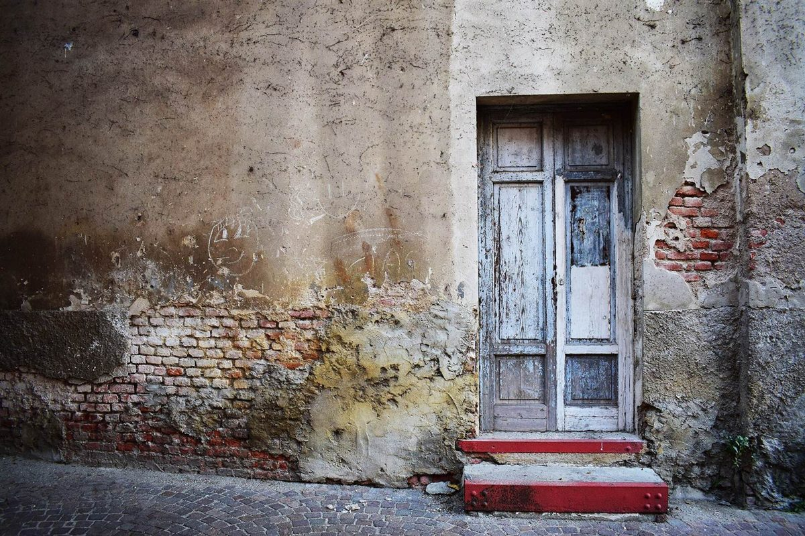
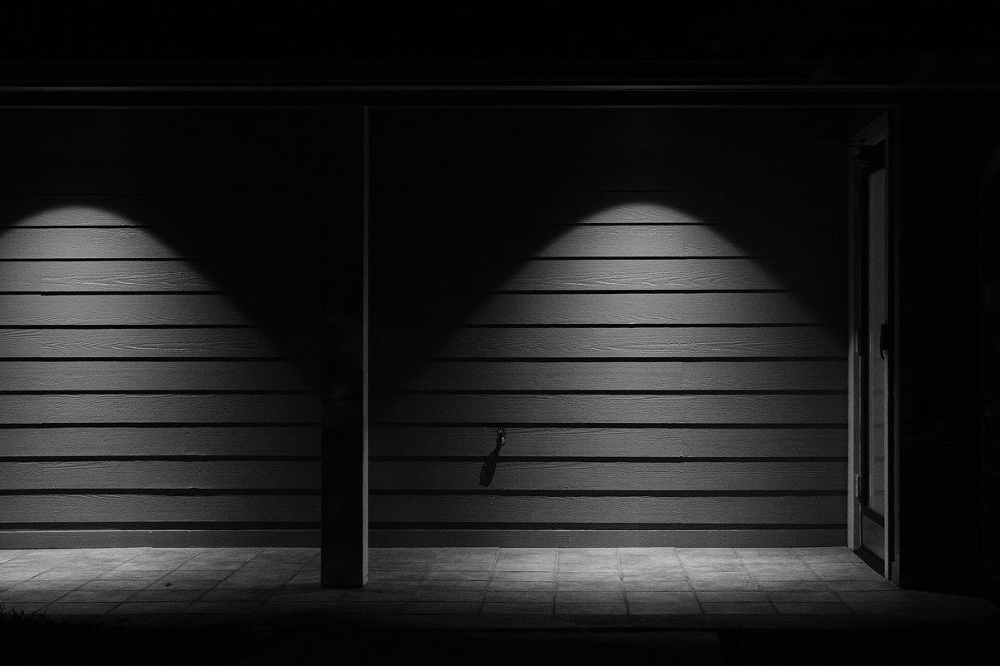
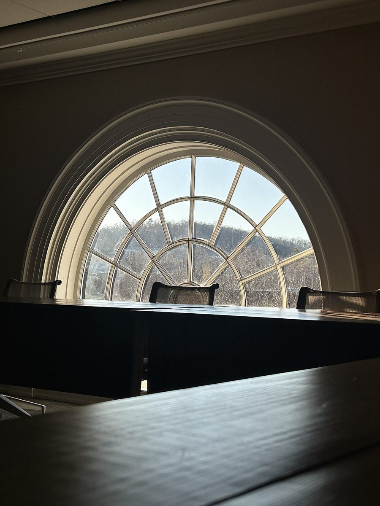
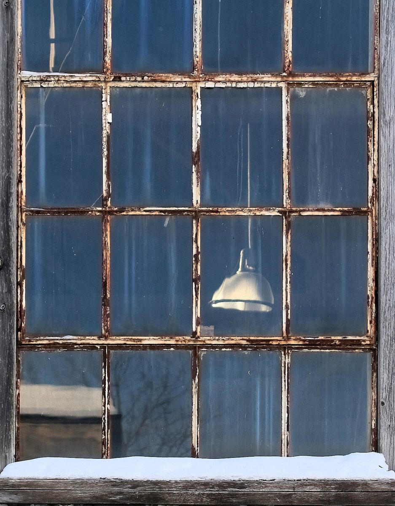
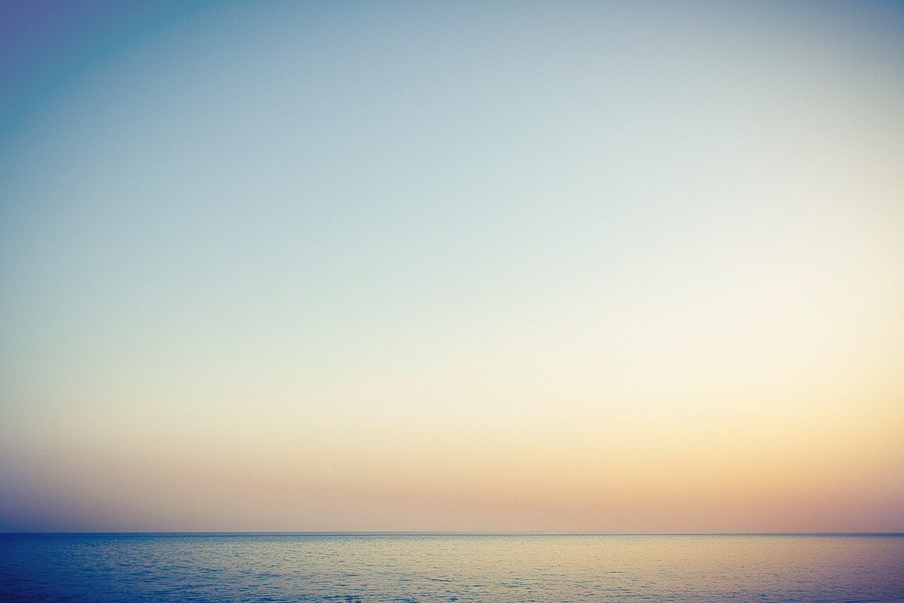

一回目
まだ閉じている
扉の前に立って、深呼吸をひとつ。
制作側の連想
制作側は「Blue Door」という屋号から、青く塗られた扉と、その前に立つ時間を連想しました。「ノックをするたび、少しずつ扉が開く」ように、5つのページを順に開いていく作りにしています。ページ上部の丸が、ノックの回数です。これは制作側の連想で、お店の理念・由来とは無関係です。屋号の「R-16」の意味は分からないため、解釈せずそのまま表記しています。
扉が開くまで
写真は白浜町やお店の風景ではありません。扉から海へ向かう流れのイメージで選んだ、国外・撮影地不明のフリー素材です。

一回目
扉の前に立って、深呼吸をひとつ。

二回目
壁を照らす光の先に、扉口が見えてきます。

三回目
丸い窓ごしに、外の景色がのぞきます。

四回目
古い窓枠の向こうが、ほのかに青く光ります。

五回目
扉の先には、水平線がひろがる想像です。
ご案内
| 所在地 | 〒649-2211 和歌山県西牟婁郡白浜町3003-12 |
|---|---|
| 電話 | なし |
| 営業時間 | 準備中 |
| 定休日 | 準備中 |
| ご予約 | 準備中 |
| 駐車場 | 準備中 |
| SNS | Instagram @blue_door_11 |